S
5
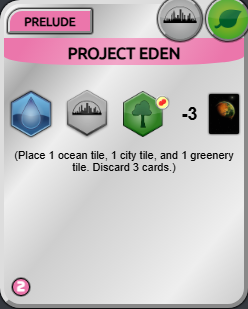
100
Project Eden

97
Business Empire
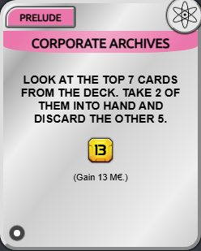
94
Corporate Archives

94
Power Generation

93
Metals Company
A
14

89
UNMI Contractor

87
Supply Drop

86
Experimental Forest

86
Aquifer Turbines
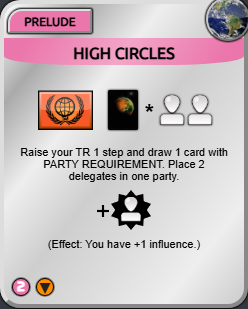
84
High Circles
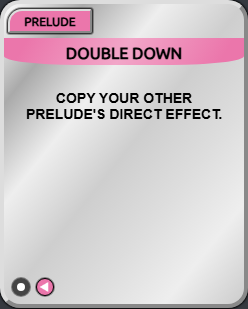
84
Double Down

83
Allied Bank

82
Huge Asteroid

82
Research Network

82
Mining Operations
ResearchGrant
82
ResearchGrant
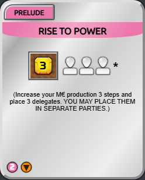
81
Rise To Power
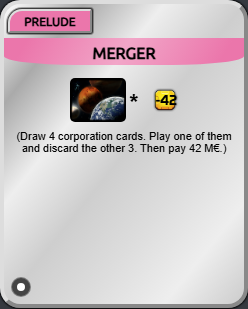
80
Merger
HydrogenBombardment
80
HydrogenBombardment
B
29
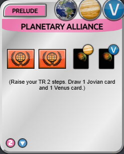
79
Planetary Alliance

79
Metal-Rich Asteroid

79
Smelting Plant
VitalColony
79
VitalColony
CO2Reducers
78
CO2Reducers

77
Great Aquifer

77
Polar Industries
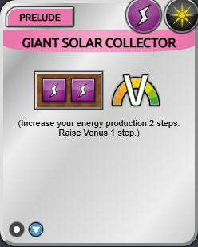
77
Giant Solar Collector
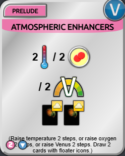
76
Atmospheric Enhancers
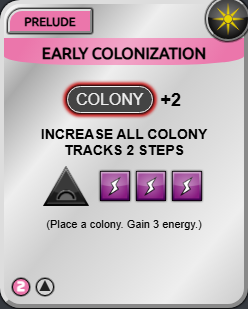
76
Early Colonization
SurveyMission
76
SurveyMission
ValuableGases
76
ValuableGases

75
Biofuels
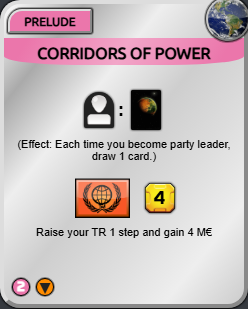
74
Corridors of Power

74
Loan
DesignCompany
74
DesignCompany

73
Acquired Space Agency
ExperiencedMartians
73
ExperiencedMartians
VenusFirst
73
VenusFirst
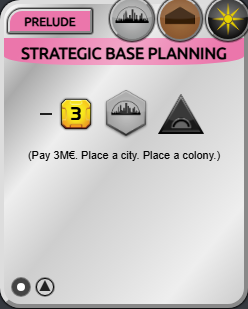
72
Strategic Base Planning
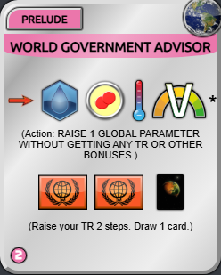
72
World Government Advisor
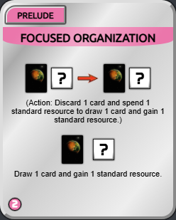
72
Focused Organization

72
Dome Farming
DeepSpaceOperations
72
DeepSpaceOperations
PersonalAgenda
72
PersonalAgenda
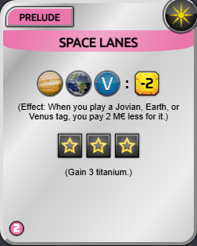
70
Space Lanes

70
Ecology Experts
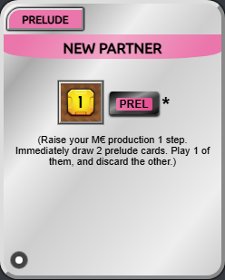
70
New Partner
TheNewSpaceRace
70
TheNewSpaceRace
C
17
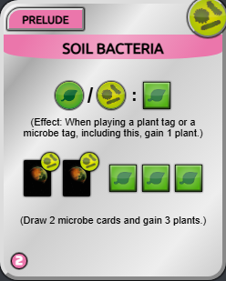
69
Soil Bacteria

69
Mohole Excavation

66
Supplier

66
Self-Sufficient Settlement
CrewTraining
65
CrewTraining
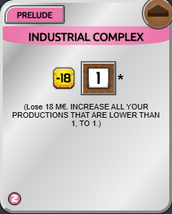
62
Industrial Complex
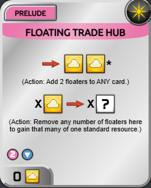
62
Floating Trade Hub
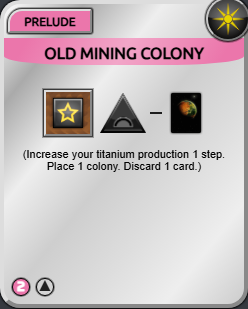
61
Old Mining Colony
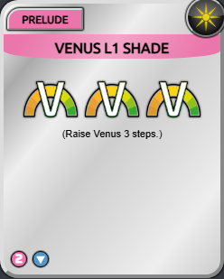
60
Venus L1 Shade

60
Orbital Construction Yard
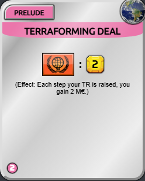
58
Terraforming Deal
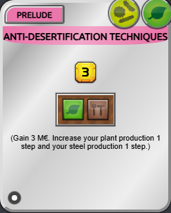
57
Anti-desertification Techniques

57
Biolab
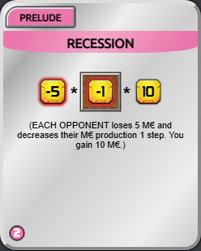
56
Recession
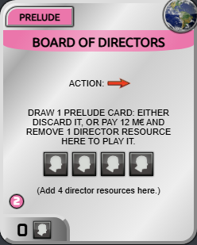
56
Board of Directors

55
Donation

55
Eccentric Sponsor
D
13

52
Martian Industries

50
Society Support
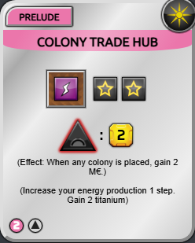
48
Colony Trade Hub

45
Mohole
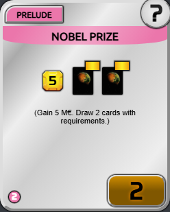
43
Nobel Prize

42
Early Settlement

41
Io Research Outpost
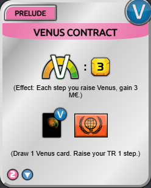
40
Venus Contract

40
Galilean Mining
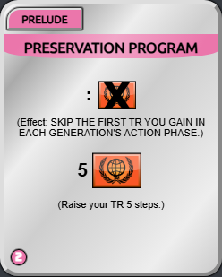
38
Preservation Program
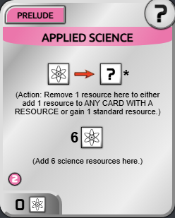
38
Applied Science

36
Biosphere Support
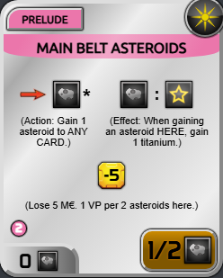
35
Main Belt Asteroids
F
1

34
Nitrogen Shipment